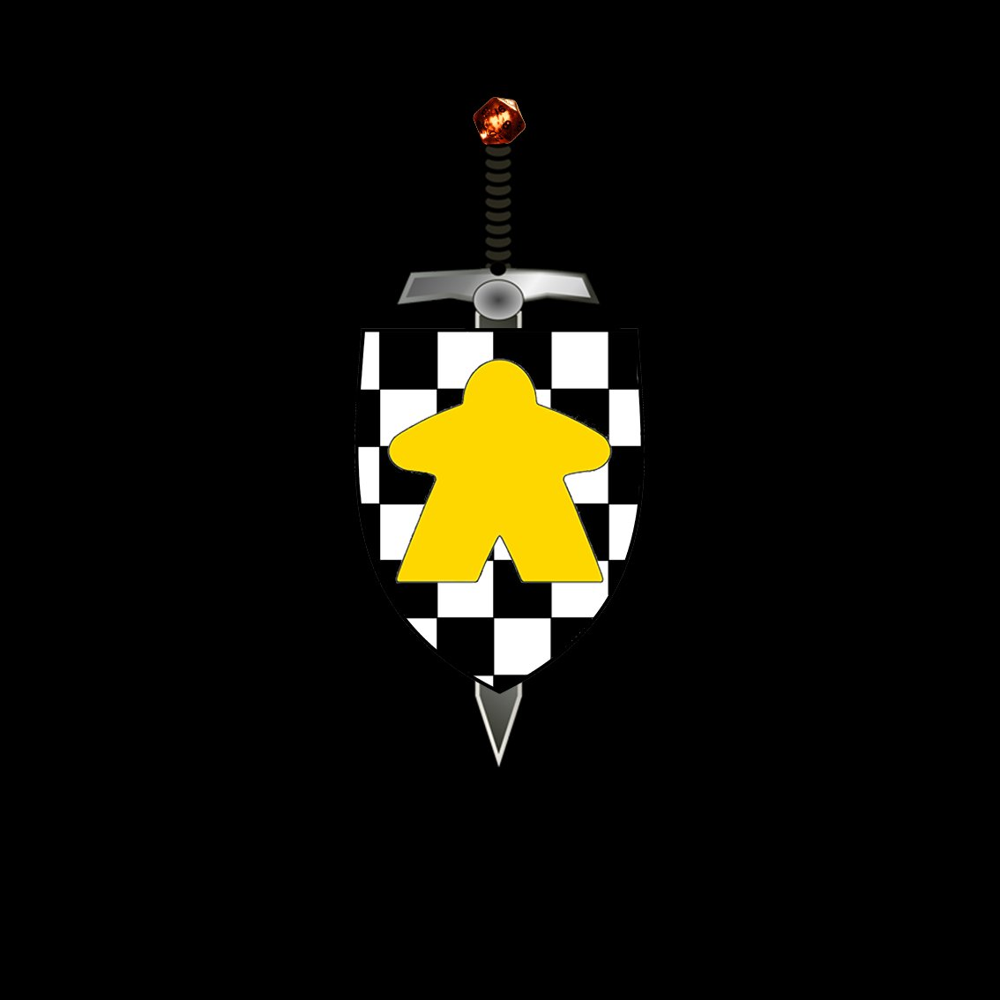

Juegos de Mesa i Rol
Contenido
El modelo de IA seleccionado ha sido Claude. El motivo ha sido porque hice una prueba con 4 IAs diferentes para ver cuál me devolvía una respuesta que me gustara más. Concretamente probé las IAs (ChatGPT, Gemini, Claude, Deepseek), a las que les pasé el siguiente prompt:
Prompt inicial
Necesito que me ayudes a crear un front end para una aplicación web con back end en php. La web consiste en un club de juegos de mesa, donde hay usuarios (users), con 4 tipos diferentes (admin, junta, partner y guest), juegos de mesa (boardgames), tipos (types), sesiones (zassessions) y partidas (games). La primera vista debería mostrar una pequeña presentación del club, los datos de la próxima sesión, la gente que haya apuntado a ir a esa sesión (una lista de hasta 15 personas), y las partidas creadas para esa sesión. También debería tener un link a una página que conecte con el end point para hacer el login/create. Me gustaría que esté escrito en React y con tailwind.Valoración respuesta inicial
Puntos a favor
La más conocida por mí.
Sé cuándo se acaban los tokens y cuándo vuelve al 100%.
Muestra el resultado visualmente.
Puntos en contra
El código parece técnicamente inferior a Claude.
Estética muy básica.
Puntos a favor
Indica la instalación necesaria sin darla por hecha.
Técnicamente en un punto intermedio.
Puntos en contra
No me gusta el entorno.
No muestra la pantalla inicial creada.
Desconocimiento sobre límite de tokens.
Puntos a favor
Calidad técnica superior al resto.
Facilidad de uso y en castellano.
Muestra el resultado visualmente antes del código.
Con comentarios y ejemplos dentro del código.
Puntos en contra
Desconocimiento sobre límite y gestión de tokens.
Puntos a favor
Facilidad de uso.
Muy bien estructurado y separado.
Puntos en contra
Sin imagen visual del resultado.
Desconocimiento sobre límite de tokens.
Conclusión
Ante esta prueba inicial, me decido por Claude. El porqué es por la facilidad de uso, pero sobre todo por la calidad del resultado inicial (destaca mucho visualmente). Y eso que no sé cuánto la podré utilizar hasta que me consuma los tokens, ni qué pasará cuando los consuma.
Tengo claro que los prompts que voy a tener que pasar van a tener que ser bastante más elaborados que el utilizado para la prueba o se inventará muchas cosas.
Toda la interacción con la IA la he ido guardando en un documento Word. Pongo el link al documento: Interacción
Sí que tengo que comentar que al respecto, una vez acabado el proyecto, que la elección de Claude tuvo un gran inconveniente. No podía hacer más de 1 o 2 prompts antes de que me bloqueara la interacción durante unas horas. En ese escenario, tenía la opción de tirar para atrás y escoger otra IA, o pagar la versión mínima de la IA y ver si así era viable continuar. Opté por esta segunda opción, ya que a pesar de todo, me estaba gustando mucho lo que me estaba generando.
Una vez pagado, he podido usar la IA sin llegar aninguna limitación.
Me ha sorprendido gratamente el código que me ha ido generando, ya que no sabía hasta qué punto era capaz de crear un proyecto mínimamente complejo acordándose del contexto de los prompts anteriores. Pocas veces le he tenido que recordar nada, aunque, eso sí, una vez antes de pagar, me indicó que me lo había hecho, pero no me llegó a pasar el fichero y, al solicitárselo, me dijo que ya había consumido las interacciones hasta dentro de X horas…
Claude a seguido los pasos que le indicaba, pero si tenia que tomar una decisión en un punto que no le había indicado, no preguntaba, sino que simplemente tomaba el camino que consideraba correcto y seguia como si nada. Esto me ha generado mucha incomodidad, ya que tenia que ser muy cuidadoso con los prompts que escribia para tener la sensación de tener yo el control, y no hacer vibe coding.
En cuanto al código en sí, me lo tendria que haber mirado mas lo que escribia, y no centrarme en el aspecto visual y funcional. También es verdad que no conocia react, y por lo tanto, prepender corregir a la IA en un lenguaje que no dominaba, se me hacia difícil.
Pues la verdad es que la conexión entre el frontend y el backend (en local), que creía que me iba a dar trabajo, ha sido bastante sencilla. Con el prompt inicial donde ya le indicaba que el frontal a hacer tenía que conectar con una API, y añadir manualmente el authcontext.jsx antes del segundo prompt, ya he podido hacer el frontal todo el tiempo conectando con la API.
Sí que es verdad que lo fácil ha sido hacerlo en local. Una vez todo hecho, rehíce la API y además la desplegué en Railway. Conseguir que el frontal funcionara con la API online ha sido todo un desafío, teniendo que instalar Claude en VS Code para que cogiera el contexto de ambos proyectos, explicándole cómo está configurado Railway y pidiéndole que analizara el porqué sí que hacía login, pero luego no mostraba ningún dato.
Al final, tras mucho tiempo investigando y probando, el problema estaba en incompatibilidad de las claves publicas y privadas. -una se habia actualizado bien pero la otra no.
He descubierto que la IA es ya una herramienta muy útil para ayudar a los programadores a desarrollar aplicaciones, agilizando mucho el proceso de escritura de código. Cada vez es más precisa, por lo que haciendo un buen prompt (cosa que necesitas saber que estás haciendo), te crea código muy decente.
Esto también es un problema, ya que da la sensación de que sin saber programar, puedes hacer programas funcionales y esto va a generar mucho vibe coding de gente que no tiene ni idea de lo que está haciendo la IA.
A dia de hoy aun es muy peligroso darle el control total a la IA. Hay que tener un conocimiento profundo del lenguaje de programación, para guiarla por el camino correcto, pero dentro de pocos años, con la evolución de la IA, esto cambiará...
El repositorio del frontal está en:
github.com/josemanuelriu-cmd/PHP_FULLSTACK_S5_T2 →